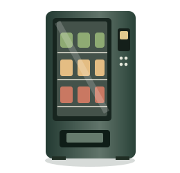

Illustration01 LEDIG

AUTOMAT 01
Fødevareautomat
Gør det lettere at tilbyde mad og måltider på arbejdspladsen, i en institution eller et fællesområde. Kapacitet og køling aftales for den konkrete model.
FødevarerFleksibelt sortiment
KØBFå et tilbud
LEJEFå en lejepris
Hvad er vigtigt at vide?
- Mulig anvendelse: mad og andre fødevarer på eksempelvis arbejdspladsen eller i et fællesområde.
- Køling, størrelse, hyldeindretning og kapacitet afhænger af den konkrete automat.
- Stand, strømkrav og eventuel transport afklares i tilbuddet.
De konkrete mål, tekniske specifikationer og priser oplyses i tilbuddet.